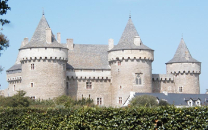
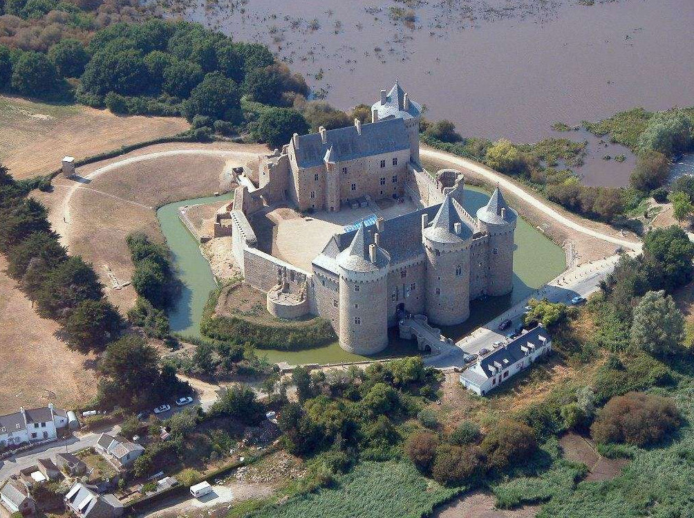
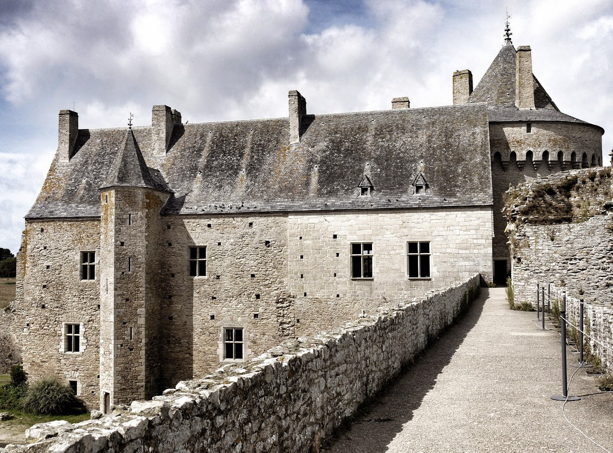

Welcome ! Let me show you the best guest-house in Britanny (modestly) tag_faces :

Ker Bidule is a nice traditional house made of granit stone and slate, surrounded by nice landscapes (but be careful to "korrigans").
This region is perfect if you like walking, cycling, using computers and fishing.
In this guest-house you can find TV, DVD player (and DVDs), CDs, books et games. Everybody would be satisfied !
A pretty roof (with barbeque) is avaible, such as torture chamber (always useful). You can rent some bikes,
using tiny roads in countryside and visiting places around Brent ("Nantes à Brest" canal).
From this house, you can visit Vannes' town, whit dark ages' style houses and french garden, near the famous port. We can find boats, for everyone,
and if you want to rent one, please clic here : directions_boat.
Ducs' pond, a nice inner place of water, is also avaible for fishing, running (around) or just walking.
Famous beaches of south's Britanny, such as Conleau or Quiberon, and Carnac's standing stones are less than 1 hour by car from this place ...
Don't be shy, and look at this house a little closer :




Now, if you want to reserve this house, please clic on Form (top menu) or clic here : library_books